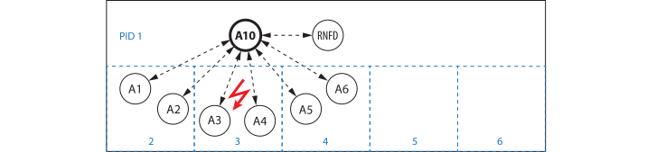

Node Failures
In distributed computing node failures can occur. The occurrence of a single node failure is not very likely but node failures can be a problem for long running applications executed on many nodes.
Remote failure detection
If an actor with a remote link is put under supervision (under a supervisor running on another worker), the supervisor starts a special child actor (RNFD: remote note failure detection) checking remote links periodically for node failures.
If it detects a ProcessExitedException on a supervised RemoteChannel, it sends a NodeFailure signal to the supervisor. The supervisor then handles it as if an actor failure had occurred.
Actor restart on spare nodes
Generally a supervisor restarts a failed remote (:transient or :permanent) child actor on the same pid (process id) where it ran before failure. But in case of a worker failure the actors that ran on it are restarted on a spare process. The supervisor determines the spare processes as follows:
- A
supervisorcan be started with asparesoption likespares = [5,6,7], with given sparepids. For actor restarts after node failures the supervisor chooses first those processes and removes them from thespareslist. - If there are no spare nodes (left), the supervisor restarts actors on the highest free
pidavailable (that is not used by its child actors). - If there is no free
pid, the supervisor restarts on a randomly chosen available worker.
Example
We setup six actors A1-A6 distributed over pids 2-4 and put them under supervision of A10 on pid 1 with two spare workers (pids 5, 6). A10 starts a RFND actor to check the supervised RemoteChannels each second for node failures.
julia> using Actors, Distributed
julia> addprocs(5);
julia> @everywhere using Actors
julia> sv = supervisor(name=:A10, spares=[5,6])
Link{Channel{Any}}(Channel{Any}(32), 1, :supervisor)
julia> for i in 1:6
register(Symbol("A$i"), Actors.spawn(+, i*10, pid=(2,2,3,3,4,4)[i]))
supervise(:A10, Symbol("A$i"))
end
julia> count_children(:A10)
(all = 7, default = 6, rnfd = 1)
julia> which_children(:A10, true)
7-element Vector{NamedTuple{(:actor, :bhv, :pid, :thrd, :task, :id, :name, :restart), T} where T<:Tuple}:
(actor = :default, bhv = +, pid = 2, thrd = 1, task = 0x0000000119a65000, id = "x-d-dokok-jabab", name = :A1, restart = :transient)
(actor = :rnfd, bhv = Actors.RNFD{Link{Channel{Any}}, Vector{Link}, Vector{Int64}}, pid = 1, thrd = 1, task = 0x0000000107cbdee0, id = "x-d-izar-turob", name = nothing, restart = :transient)
(actor = :default, bhv = +, pid = 2, thrd = 1, task = 0x000000011798d990, id = "x-d-divim-tokib", name = :A2, restart = :transient)
(actor = :default, bhv = +, pid = 3, thrd = 1, task = 0x00000001689f5bb0, id = "x-d-kofiz-jovub", name = :A3, restart = :transient)
(actor = :default, bhv = +, pid = 3, thrd = 1, task = 0x0000000116122ed0, id = "x-d-dimif-furib", name = :A4, restart = :transient)
(actor = :default, bhv = +, pid = 4, thrd = 1, task = 0x00000001705e9dd0, id = "x-d-ladiv-nulib", name = :A5, restart = :transient)
(actor = :default, bhv = +, pid = 4, thrd = 1, task = 0x000000011fb7aed0, id = "x-d-duvul-purib", name = :A6, restart = :transient)
julia> info(:A3)
Actor default
Behavior +
Pid 3, Thread 1
Task @0x00000001689f5bb0
Ident x-d-kofiz-jovub
Name A3We registered our remote actors under names :A1…:A6, which keeps them accessible to each other after restart. Our system now looks similar to the following:

If the worker process with pid 3 fails, the supervisor restarts actors A3 and A4 on the first spare worker process (pid 5):
julia> rmprocs(3);
┌ Warning: 2021-04-06 17:26:55 A10 supervisor: Process 3 exited!
└ @ Actors ~/.julia/dev/Actors/src/logging.jl:31
┌ Warning: 2021-04-06 17:26:55 A10 supervisor: restarting child A3 on pid 5
└ @ Actors ~/.julia/dev/Actors/src/logging.jl:31
┌ Warning: 2021-04-06 17:26:55 A10 supervisor: restarting child A4 on pid 5
└ @ Actors ~/.julia/dev/Actors/src/logging.jl:31
julia> info(:A3)
Actor default
Behavior +
Pid 5, Thread 1
Task @0x000000011c576ed0
Ident x-d-dudil-kurib
Name A3With other supervision strategies (:one_for_all or :rest_for_one) the supervisor would have shutdown other child actors as well (A1,A2,A5,A6 or A5,A6 respectively) and restarted them on their same pids. The system after actor restart looks as follows:

pid 3 is gone and the supervisor has one spare worker (pid 6) left.